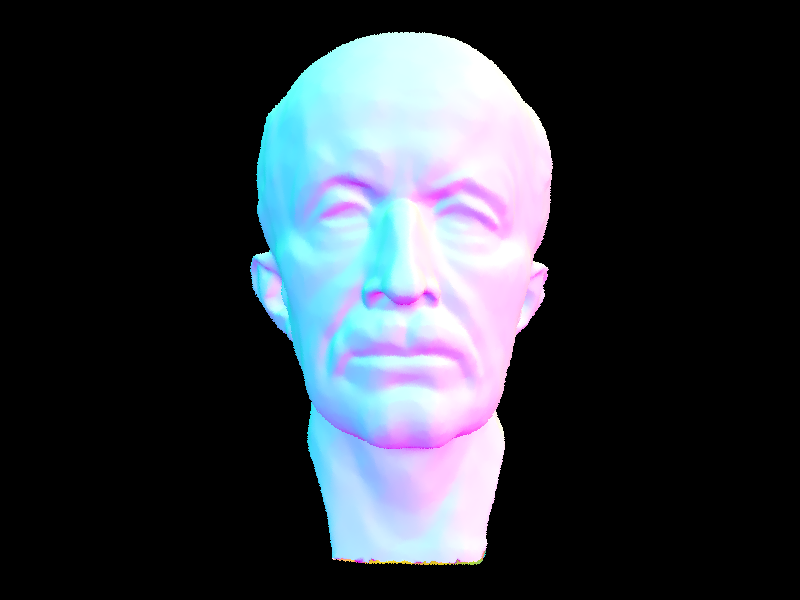

Explain how your BVH is constructed. How did you choose your splitting axis and point?
First, a bounding box was computed over all the primitives in the current node. If the number of
primitives is less than or equal to a threshold max_leaf_size, the node becomes a leaf
and those primitives are stored in it. If the number of primitives exceeds the
max_leaf_size, then they are split into two groups to become child nodes. This process
is repeated until all nodes satisfy the leaf size condition.
The split heuristic was chosen to be the midpoints of centroids along an axis. First, a bounding box over all of the centroids of the primitives was computed, and the axis on which the primitives are the most spread out is selected as the axis to split on. The primitive midpoints are then split along that axis, with half going to each of the child nodes of the resulting binary tree.
Images with normal shading for large .dae files that you can only render with BVH acceleration.

Compare rendering times on a few scenes with moderately complex geometries with and without BVH acceleration. Present your results in a one-paragraph analysis.
Rendering scenes with moderately complex geometries takes much longer without BVH acceleration, since each ray has to be tested against every primitive in the scene. As scene geometry becomes more complex, this significantly increases the amount of work required for each rendered pixel. With BVH acceleration, rendering becomes much faster because rays can first be tested against bounding boxes, allowing entire groups of primitives to be skipped during traversal. If a ray does not intersect a node's bounding box, then none of the primitives inside that node need to be tested. This greatly reduces the number of primitive intersection tests and improves rendering performance.
Rendering time comparison:
bunny_microfacet_cu.dae
CBlucy.dae
cow.dae
maxplanck.dae